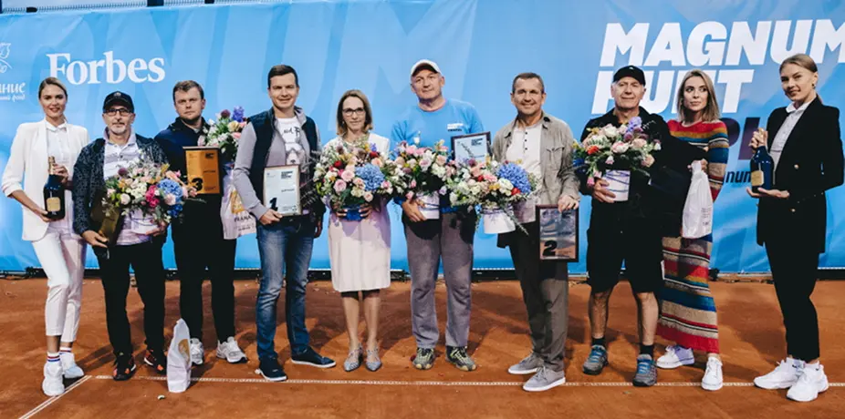
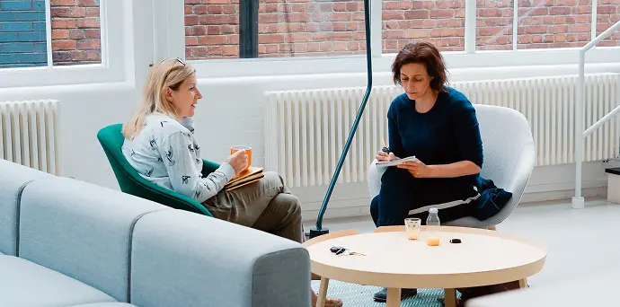
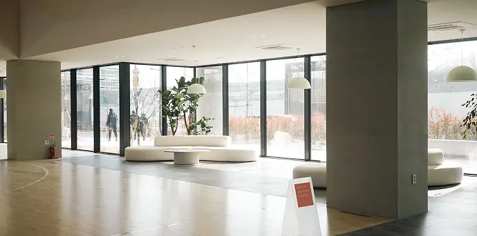

Главное слово будущего — «адаптация»: чему научил руководителей 2022 год
03 / 12 / 2018
Корпоративное управление
Юлия Крижевич
Управляющий партнёр

К лету 2022-го российские компании и их руководители только было оправились от последствий февральских событий, скорректировали планы
и приступили к их выполнению, но в конце сентября после объявления частичной мобилизации вновь столкнулись с кризисом.
Руководители пытались сохранить то, что можно, срочно искали дополнительные варианты заработка и привыкали жить в постоянном ожидании новых «чёрных лебедей». Главными вызовами в 2023 году для них станут адаптация к изменениям, создание новой корпоративной культуры и принятие решения по сохранению или отказу от удаленки, считает управляющий партнёр Magnum Hunt Executive Search Юлия Крижевич

В ходе нашего исследования мы выявили не только наиболее действенные практики председателей, но и «вредные привычки», снижающие эффективность работы совета и подрывающие отношения председателя с СЕО, директорами или акционерами компании.
В большинстве случаев председатели выработали эти привычки, работая на других позициях, где те, возможно, способствовали повышению эффективности, а позднее бессознательно включили их в свой общий инструментарий.
Все фотографии доступны по «ссылке». По его мнению, «опыт» и «рефлексия» являются лучшими лекарствами от вредных приобретённых привычек.
Мы нашли пять поведенческих ловушек, которых стоит остерегаться председателю совета директоров.
Поведение в стиле СЕО
Около 85% председателей, принявших участие…… в прошлом занимали должность СЕО Около 85% председателей, принявших участие в исследовании, в прошлом занимали должность СЕО (в общей выборке председателей их 77%[1]). СЕО и топ-менеджмент наиболее успешны, когда определяют видение компании, делают смелые управленческие шаги, назначают исполнителей и делегируют задачи, берут на себя ответственность за принятие решений и подают пример.
Ориентированные на конкретные действия и достижение результатов, они находятся в центре событий, и взгляды всех заинтересованных сторон обращены на них. Становясь председателями совета директоров, экс-СЕО зачастую продолжают вести себя как привыкли, а директоров воспринимают как членов «своей команды»: они говорят больше, чем слушают, предлагают собственные решения до того, как высказались все остальные, а некоторые даже организуют team-building для членов совета директоров. Вместо того чтобы стимулировать директоров, такой подход часто приводит к разобщению и негодованию из-за отношения к директорам «как к подчинённым».
В личных историях многие респонденты подтвердили, что в работе председателя нужен совсем другой тип лидерства, чем в работе СЕО. Они размышляли о том, что могли бы работать эффективнее, если бы обратили на это внимание с первого дня вступления в должность. Председатель из России дал следующий совет начинающим председателям советов директоров:
Прошлый опыт не сделает вас успешным. Откажитесь от привычек руководителя и станьте рефлексивным председателем.
Идеализация заседания совета
Мы обнаружили огромную разницу в том, как относятся к заседаниям совета директоров опытные председатели и те, кто лишь недавно вступил в эту должность. Для менее опытных председателей основное действие совета происходит в комнате заседаний, в то время как опытные понимают — это лишь верхушка айсберга. Правило «80:20» применимо к работе председателя — действия, предпринятые (не предпринятые) до и после заседания, приносят порядка 80% эффективности совета. Широко известное правило «80:20» применимо и к работе председателя — действия, предпринятые (или не предпринятые) до и после заседания, дают 80% эффективности совета. Опытные председатели закладывают львиную долю своего времени на активную работу именно вне заседаний совета.
Один председатель поделился своей практикой обеспечения эффективной работы совета директоров. Подход состоит из четырёх компонентов: планирование, подготовка, контроль и коммуникация с ключевыми игроками. Упомянутый председатель планирует сроки проведения заседаний совета директоров и комитетов на следующие 24 месяца. Он всегда старается сохранить выбранные даты, чтобы не создавать дополнительных хлопот для директоров и не подрывать уважение к совету как институту. Заседания комитетов всегда проводятся во второй половине дня, за ними следует ужин для всех неисполнительных директоров (“Это позволяет мне выиграть некоторое время на заседании“) и заседание совета директоров на следующее утро. Председатель негативно относится к заседаниям продолжительностью более пяти часов и всегда проводит их в утреннее время.

Workspace | Barley Mow Centre, Barley Mow Passage, London, UKПодготовка начинается с вводного курса для новых директоров и включает в себя: работу комитетов, подготовку и распространение материалов, планирование самого заседания. По мнению респондента, комитеты имеют решающее значение для совета директоров:
Три четверти работы приходится на заседания комитетов. Комитеты небольшие, их члены обладают соответствующей экспертизой, а обсуждения всегда откровенны. Заседания совета директоров — более формальные, поэтому я стараюсь проводить глубокие дискуссии на уровне комитетов и делегирую им аналитическую работу и подготовку резолюций для решений всего совета директоров.
Председатель также ведёт детальные записи с заседаний и делится ими со всеми членами совета. Записи чаще всего содержат конкретные рекомендации к действиям; они отражают различные взгляды и мнения, а также выводы и решения. В дополнение к формальным механизмам контроля председатель ежемесячно неформально обращается к СЕО и председателям комитетов, интересуясь прогрессом в исполнении решений совета директоров: «Таким образом я показываю, что я помню и мне не все равно — это даёт им дополнительную мотивацию».
- Пример
- Нумерованного
- Списка
- Пример
- Неумерованного
-
Списка
- Вложенный
- Список
Создание команды
Практика построения команды, эффективно работающая для менеджмента, совершенно не применима в работе председателя совета директоров. Один из наших респондентов, независимый председатель, в прошлом — CEO международной розничной сети, рассказал, как его вера в командное взаимодействие подвела его в первом же совете директоров. Вскоре после вступления в должность председателя он организовал мероприятие в неформальной обстановке, чтобы обсудить общие цели, правила взаимодействия и взаимные ожидания.

Workspace | Barley Mow Centre, Barley Mow Passage, London, UK 01 / 25